Laboratorio 01 · Evidencia volátil
Análisis forense de una imagen de memoria RAM con Volatility3 y elaboración del informe
Usted recibe una imagen RAW de la memoria de un equipo Windows 11. En la Parte 1 la verifica, la lee con Volatility3 y responde con evidencia las preguntas del caso en un informe forense. La Parte 2 muestra cómo se adquirió esa imagen con FTK Imager y WinPmem, cómo se sellaron sus hashes y cómo se registró la cadena de custodia.
Parte 1 · Análisis del RAW
El caso: qué recibe y qué debe responder
Un equipo Windows 11 fue adquirido en vivo. Usted recibe la imagen de su memoria, junto con su hash y su registro de cadena de custodia. La solicitud de análisis plantea cinco preguntas, y su informe debe responder cada una con evidencia: el comando ejecutado, la salida obtenida y su interpretación.
- Sistema y momento: ¿qué sistema operativo hay en la imagen y en qué fecha y hora exactas se capturó?
- Procesos: ¿qué navegador estaba en uso, desde cuándo y con cuántos procesos?
- Herramientas: ¿hay rastros de una herramienta forense en ejecución en el momento de la captura?
- Red: ¿qué puertos y conexiones de red había, y cuáles pertenecían al navegador?
- Navegación: ¿visitó el usuario estos sitios?
unad.edu.co, Google Maps en@5.5420138,-73.3590799,eltiempo.com, una receta ennescafe.com/coy la búsqueda «cadena de custodia evidencia digital».
Material entregado
| Elemento | Detalle |
|---|---|
| Imagen | LAB01_FTK_GUILLE_20261122.mem (RAW, 10 GiB) |
| SHA‑256 | 0654752FC6628B0FA1333316B8531F440D7090E74337F429397A7F492D394736 |
| MD5 | E4FFC0C59584D6FB30A537283BC4246A |
| Adquirida con | FTK Imager 8.3.0.27, 2026‑11‑22 16:45:06 (UTC−5) |
| Ubicación | Google Drive, carpeta Artefacto_RAW, junto a su .hashes.txt (ver paso 1.2) |
| Plantilla | Plantilla-Informe-Forense-LAB01.docx |
Requisitos: Windows 10/11 de 64 bits, 16 GB de RAM recomendados, unos 15 GB libres (imagen + resultados) e internet la primera vez que se usa Volatility3.
Paso 1 · Descargar la imagen y verificar su integridad
Antes de abrir una evidencia hay que demostrar que es idéntica a la que se adquirió. Si el hash no coincide, no se analiza y se informa la novedad.
Crear las carpetas de trabajo
Use tres carpetas: C:\Forense\evidencia para la imagen, C:\Forense\resultados para las salidas de Volatility3 y C:\Forense\informe para el informe. Abra PowerShell (Inicio → escriba PowerShell → Enter) y copie esta línea. Las rutas van separadas por comas:
mkdir C:\Forense\evidencia, C:\Forense\resultados, C:\Forense\informeSi usa CMD (Símbolo del sistema) en lugar de PowerShell, las rutas van separadas por espacios:
mkdir C:\Forense\evidencia C:\Forense\resultados C:\Forense\informeTambién puede crearlas a mano en el Explorador de archivos: clic derecho → Nuevo → Carpeta.
Descargar la imagen de Google Drive
Las imágenes están sin comprimir en la carpeta Artefacto_RAW de Google Drive, cada una junto a su archivo de hashes:
| Archivo en Drive | Tamaño | Para qué |
|---|---|---|
LAB01_FTK_GUILLE_20261122.mem | 10 GB | Imagen que debe analizar (adquirida con FTK Imager) |
LAB01_FTK_GUILLE_20261122.mem.hashes.txt | 637 bytes | MD5, SHA‑1 y SHA‑256 registrados en la adquisición |
LAB01_WinPmem_GUILLE_20261122_164926.raw | 10 GB | Opcional: la misma memoria adquirida con WinPmem, 3 minutos después |
LAB01_WinPmem_GUILLE_20261122_164926.raw.hashes.txt | 685 bytes | Hashes de la imagen de WinPmem |
Abrir la carpeta Artefacto_RAW en Google Drive (acceso con su cuenta @unad.edu.co)
- En Drive, haga clic derecho sobre
LAB01_FTK_GUILLE_20261122.mem→ Descargar. Como pesa 10 GB, Drive avisará que no puede analizarlo en busca de virus: elija Descargar de todas formas. Según su conexión, la descarga puede tardar desde varios minutos hasta más de una hora. - Descargue también
LAB01_FTK_GUILLE_20261122.mem.hashes.txt. - Los dos archivos quedan en su carpeta Descargas. Muévalos a
C:\Forense\evidencia. - Compruebe el tamaño: el Explorador debe mostrar 10.485.760 KB, que corresponde a 10.737.418.240 bytes.
Si descarga la carpeta entera, Drive la comprime en varios .zip de unos 2 GB y la imagen puede quedar partida. Descargue cada archivo con clic derecho → Descargar. No abra el .mem con ningún programa antes de verificar su hash.
Para mover los archivos y comprobar el tamaño desde PowerShell:
Move-Item $HOME\Downloads\LAB01_FTK_GUILLE_20261122.mem* C:\Forense\evidencia\
Get-Item C:\Forense\evidencia\LAB01_FTK_GUILLE_20261122.mem | Select-Object Name, Length # Length = 10737418240Calcular el hash y compararlo con el registrado
En PowerShell calcule el hash y compárelo con el que aparece en LAB01_FTK_GUILLE_20261122.mem.hashes.txt:
cd C:\Forense\evidencia
Get-Date -Format "yyyy-MM-dd HH:mm:ss zzz" # anote la hora de la verificación
Get-Content .\LAB01_FTK_GUILLE_20261122.mem.hashes.txt # hashes registrados
Get-FileHash .\LAB01_FTK_GUILLE_20261122.mem -Algorithm SHA256
certutil -hashfile .\LAB01_FTK_GUILLE_20261122.mem SHA256 # segunda herramientaAlgorithm Hash Path
--------- ---- ----
SHA256 0654752FC6628B0FA1333316B8531F440D7090E74337F429397A7F492D394736 C:\Forense\evidencia\LAB01_FTK_GUILLE_20261122.memEn Linux o CAINE: sha256sum LAB01_FTK_GUILLE_20261122.mem. Calcular el SHA‑256 de 10 GiB tarda entre 20 s y 2 min.
"La imagen recibida produjo el SHA‑256 0654752F…2D394736 el [fecha y hora], idéntico al registrado en la cadena de custodia; se verificó además con certutil. La evidencia no fue alterada."
Paso 2 · Instalar Python y Volatility3
Volatility3 es un programa escrito en Python. Primero se instala Python y luego, en un entorno virtual (una carpeta aislada), Volatility3.
Instalar Python
- Entre a python.org → Downloads → Windows y descargue el Python Install Manager.
- Si Edge advierte sobre el archivo
.msix, elija Conservar (solo si viene de python.org). - Ábralo → Instalar Python.
- En la consola de configuración responda Y a: rutas largas, agregar la carpeta de comandos al PATH e instalar el CPython más reciente.
- Cierre y abra de nuevo PowerShell, y compruebe con
py --version.
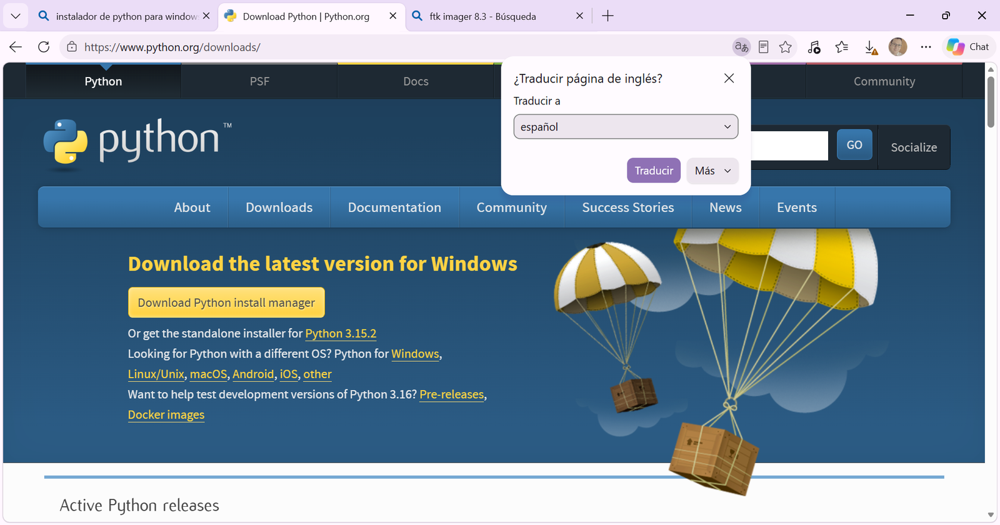
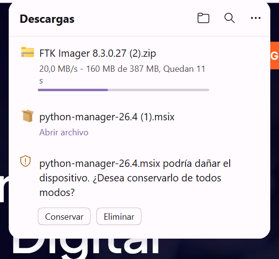
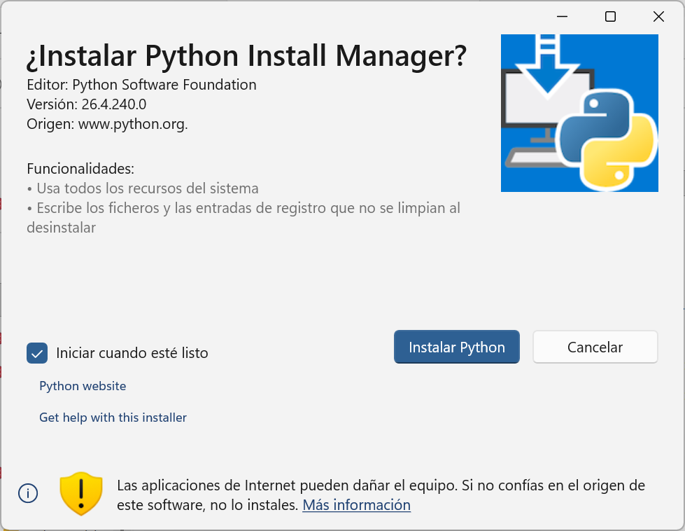
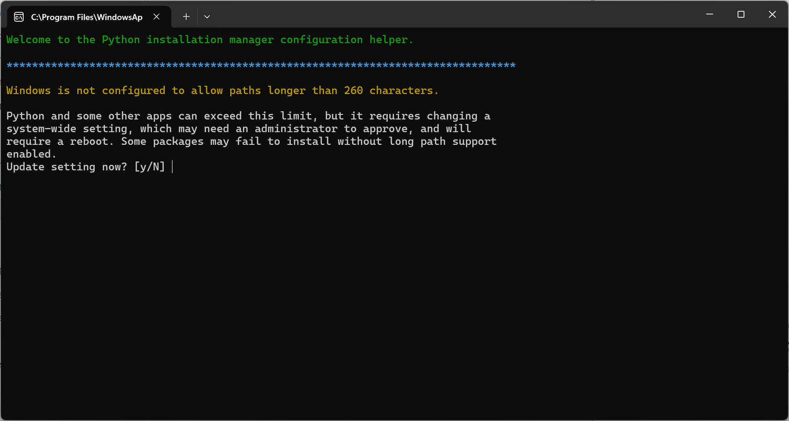
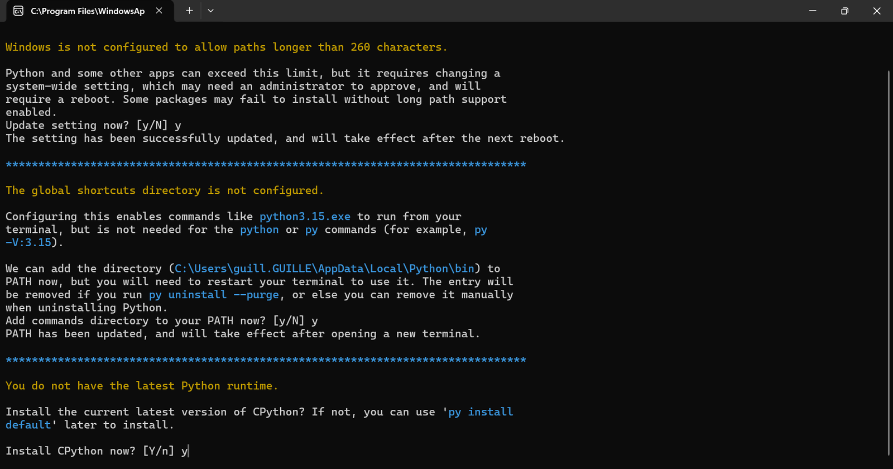
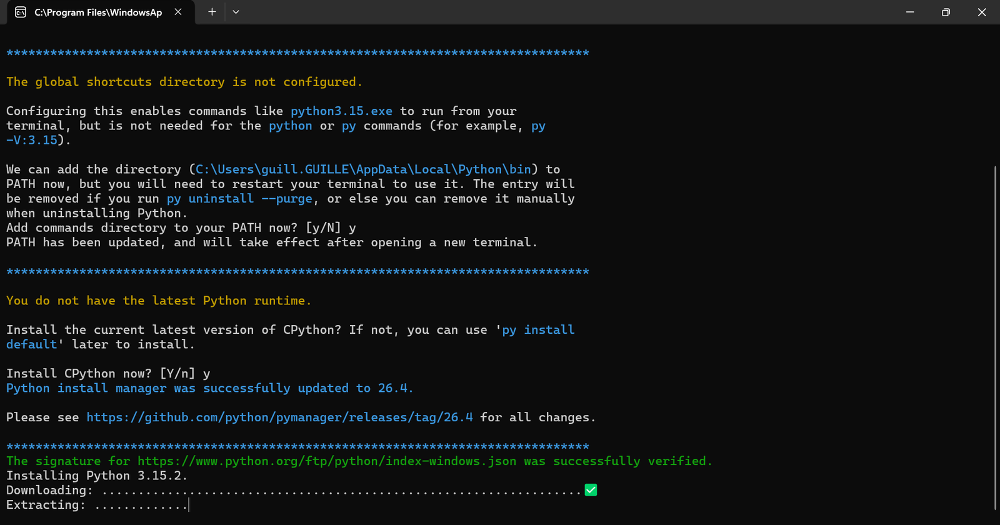
Crear el entorno virtual e instalar Volatility3
py -m venv C:\Forense\vol3 # crea el entorno virtual
C:\Forense\vol3\Scripts\Activate.ps1 # lo activa: el prompt empieza con (vol3)
python -m pip install --upgrade pip
pip install volatility3 # en este laboratorio: 2.28.2
vol -h # comprobarSuccessfully installed pefile-2024.8.26 volatility3-2.28.2
Volatility 3 Framework 2.28.2
usage: vol.exe [-h] [-c CONFIG] [--parallelism [{processes,threads,off}]]
[-e EXTEND] [-p PLUGIN_DIRS] [-s SYMBOL_DIRS] [-v] [-l LOG]
[-o OUTPUT_DIR] [-q] [-f FILE] [--write-config]
...Ejecute una sola vez Set-ExecutionPolicy -Scope CurrentUser RemoteSigned, o use CMD con C:\Forense\vol3\Scripts\activate.bat. Cada vez que abra una consola nueva debe activar el entorno otra vez.
Paso 3 · Leer el RAW con Volatility3
Todos los comandos tienen la misma forma: vol -f <imagen> <plugin>. En esta versión no se muestran las salidas: ejecute cada comando, observe el resultado y llévelo a su informe. Las tablas explican cómo leer cada campo. Las horas que muestra Volatility3 están en UTC: reste 5 horas para la hora de Colombia.
La primera activa el entorno donde está instalado Volatility3 y la segunda guarda en $IMG la ruta de la imagen. Las dos se pierden al cerrar la ventana.
C:\Forense\vol3\Scripts\Activate.ps1 # el prompt debe empezar con (vol3)
$IMG = "C:\Forense\evidencia\LAB01_FTK_GUILLE_20261122.mem"Esto ocurre cuando el entorno virtual no está activado. Ejecute la línea Activate.ps1. Si PowerShell responde que la ejecución de scripts está deshabilitada, escriba una sola vez Set-ExecutionPolicy -Scope CurrentUser RemoteSigned, responda S y vuelva a activar el entorno. Otra opción es llamar a Volatility3 con su ruta completa, sin activar nada: C:\Forense\vol3\Scripts\vol.exe -f $IMG windows.info.
windows.info: ¿qué sistema hay en la imagen y cuándo se capturó? (pregunta 1)
vol -f $IMG windows.infoLa primera vez descarga de Microsoft los símbolos del kernel exacto de la imagen (necesita internet) y tarda alrededor de un minuto. Las siguientes ejecuciones son mucho más rápidas.
Ejecute el comando y observe la salida. Guárdela (captura o CSV, paso 4) y use las tablas de abajo para interpretarla.
Qué significa cada línea y de dónde sale
| Campo | Qué es | Cómo se interpreta |
|---|---|---|
Kernel Base | Dirección virtual donde quedó cargado el kernel (ntoskrnl.exe) en esa sesión. | Cambia en cada arranque porque Windows la elige al azar (KASLR). Solo sirve para el análisis de esta imagen; no se reporta como hallazgo. |
DTB | Directory Table Base: dirección física de la tabla de páginas raíz del kernel (el registro CR3 del procesador). | Con ella Volatility3 traduce direcciones virtuales a físicas. Si la imagen también se adquirió con WinPmem, compare este valor con el CR3 que WinPmem muestra al iniciar: deben coincidir. |
Symbols | Archivo de símbolos que Volatility3 descargó de Microsoft y convirtió a su formato (ISF). | ntkrnlmp = kernel multiprocesador. El código largo (GUID + edad del PDB) identifica la compilación exacta del kernel; otro parche de Windows tendría otro código. |
Is64Bit | Si el sistema es de 64 bits. | True = Windows x64. |
IsPAE | Si usa PAE, una extensión de memoria de los sistemas de 32 bits. | En 64 bits siempre es False: no aplica. |
layer_name | Capa de traducción de memoria que Volatility3 construyó encima del archivo. | Intel32e es el nombre que da Intel al modo de 64 bits (IA‑32e). Coincide con Is64Bit = True. |
memory_layer | Capa base: de dónde se leen los bytes físicos. | El archivo .mem: la imagen RAW se lee directamente, sin contenedor. |
KdVersionBlock | Dirección de la estructura que Windows prepara para su depurador (KDDEBUGGER_DATA). | Volatility3 la usa para leer la versión y localizar la lista de procesos. No se reporta. |
Major/Minor | Versión según el bloque del depurador: Major 15 (0xF) indica una compilación comercial (free build), no el número de Windows. Minor es el número de compilación (build) del kernel. | El segundo número es el build. Referencia: 19041–19045 = Windows 10 (2004 a 22H2); 22000 = Windows 11 21H2; 22621 = 22H2; 22631 = 23H2; 26100 = 24H2; 26200 = 25H2. Las versiones 25H2 y 26H2 se instalan con un «paquete de habilitación» sobre 24H2 y comparten sus archivos, así que en memoria el kernel puede reportar 26100. Las equivalencias se consultan en Windows 11 release information y Windows 10 release information de Microsoft. |
MachineType | Tipo de procesador para el que se compiló el kernel. | Convierta el número de decimal a hexadecimal con '{0:X}' -f <número> en PowerShell (o la calculadora en modo Programador). 0x8664 = AMD64 (x64); 0x14C = x86 de 32 bits; 0xAA64 = ARM64. |
KeNumberProcessors | Procesadores lógicos que Windows estaba usando. | Procesadores lógicos = núcleos × hilos por núcleo (Hyper‑Threading). No es el número de chips. |
SystemTime | Hora del sistema en el instante de la captura, leída de la estructura KUSER_SHARED_DATA. | El +00:00 indica UTC. Colombia es UTC−5 todo el año (no tiene horario de verano): reste 5 horas. En PowerShell: ([datetime]'AAAA-MM-DD hh:mm:ss').AddHours(-5). Es el dato clave de la línea de tiempo: compárelo con la hora de adquisición de la cadena de custodia. |
NtSystemRoot | Carpeta donde está instalado Windows. | Carpeta del sistema; en una instalación estándar es C:\WINDOWS. |
NtProductType | Tipo de producto. | WinNt = equipo cliente (Windows 10/11). LanManNt sería un controlador de dominio y Server un servidor. |
NtMajorVersion /NtMinorVersion | Versión interna del núcleo de Windows. | Windows 10 y Windows 11 reportan los dos 10.0. Se distinguen por el build: 22000 o mayor = Windows 11; menor = Windows 10. |
PE Major/MinorOperatingSystemVersion | La misma versión, leída esta vez de la cabecera PE del archivo del kernel en memoria. | Coincide con NtMajor/NtMinor: las dos fuentes son consistentes. |
PE Machine | Arquitectura, según la cabecera PE del kernel. | 0x8664 = x64; coincide con MachineType. |
PE TimeDateStamp | Sello que el compilador grabó en la cabecera del archivo del kernel. | No es la fecha de instalación ni de la captura. En Windows moderno puede ser un valor de compilación reproducible: no lo use como evento en la línea de tiempo. |
¿Qué sistema operativo, arquitectura y build hay en la imagen? ¿En qué fecha y hora exactas se capturó, convertidas a UTC−5? ¿Coincide con la hora de adquisición registrada en la cadena de custodia?
windows.pslist: ¿qué procesos se ejecutaban? (preguntas 2 y 3)
vol -f $IMG windows.pslist # todos los procesos
vol -f $IMG windows.pslist | findstr /i "msedge chrome firefox brave opera" # navegadores
vol -f $IMG windows.pslist | findstr /i "FTK winpmem dumpit magnet" # herramientas forensesEjecute el comando y observe la salida. Guárdela (captura o CSV, paso 4) y use las tablas de abajo para interpretarla.
Qué significa cada columna
| Columna | Qué es | Cómo se interpreta |
|---|---|---|
PID | Número que identifica al proceso mientras se ejecuta (Process ID). | Sirve para relacionar el proceso con las demás salidas (cmdline, netstat) y para volcar su memoria. |
PPID | PID del proceso que lo creó (proceso padre). | Permite reconstruir el árbol de procesos: busque el PPID del proceso principal del navegador y luego qué proceso tiene ese PID. Si es explorer.exe, el usuario lo abrió desde su sesión. |
ImageFileName | Nombre del ejecutable. Windows lo guarda recortado a 14 caracteres. | Por eso a veces se ven nombres cortados, como mDNSResponder.. |
Offset(V) | Dirección virtual de la estructura del proceso (EPROCESS) en el kernel. | Sirve a la herramienta para ubicar el proceso. No se reporta. |
Threads | Número de hilos activos del proceso. | 0 en un proceso que ya terminó. |
Handles | Número de recursos abiertos (archivos, claves de registro…). | En esta versión de Volatility3 se muestra - porque pslist no lo calcula; use windows.handles --pid si lo necesita. |
SessionId | Sesión de Windows a la que pertenece el proceso. | 0 = servicios del sistema; 1 = la sesión del usuario que inició sesión; N/A = procesos del núcleo (System, Registry). |
Wow64 | True si es un programa de 32 bits ejecutándose en Windows de 64 bits. | False = programa de 64 bits. |
CreateTime | Fecha y hora de inicio del proceso, en UTC. | Está en UTC: reste 5 horas para la hora de Colombia. |
ExitTime | Hora de terminación, si el proceso ya había terminado. | Vacío o N/A = seguía en ejecución al capturar. |
File output | Indica si el plugin extrajo el ejecutable a disco. | Disabled salvo que se use la opción --dump. |
¿Cuántos procesos hay en total? ¿Qué navegador estaba en uso, cuál es su proceso principal (PID y PPID), a qué hora se inició y cuántos procesos suyos hay? ¿Aparece alguna herramienta forense en ejecución? Si aparece, explique por qué está en su propia captura.
windows.cmdline: ¿con qué parámetros se ejecutó cada proceso?
vol -f $IMG windows.cmdline | findstr /i "<navegador>.exe" # cambie por el que encontró en 3.2Ejecute el comando y observe la salida. Guárdela (captura o CSV, paso 4) y use las tablas de abajo para interpretarla.
| Columna | Qué es | Cómo se interpreta |
|---|---|---|
PID | Proceso al que pertenece la línea de comandos. | Se cruza con el PID de pslist. |
Process | Nombre del ejecutable. | — |
Args | Ruta del programa y parámetros con que se lanzó. | --type=renderer = pestaña; --type=utility … NetworkService = servicio de red; --type=gpu-process = gráficos; --win-session-start = navegador iniciado con la sesión. Un - significa que esa página de memoria estaba en el disco (paginada) y no se pudo leer. |
Los navegadores basados en Chromium (Edge, Chrome) reparten su trabajo en varios procesos: --win-session-start es el navegador principal, --type=renderer son las pestañas, network.mojom.NetworkService es el servicio de red y gpu-process es la tarjeta gráfica. Un guion (-) indica que esa información no estaba en la RAM, porque estaba paginada al disco. Las URLs no aparecen aquí: hay que buscarlas en la memoria (paso 3.5).
windows.netstat y windows.netscan: ¿qué red había? (pregunta 4)
vol -f $IMG windows.netscan # busca estructuras de red por firmas
vol -f $IMG windows.netstat # recorre las tablas de red del sistemaEjecute los dos plugins y compare. Con algunos builds recientes de Windows 11, windows.netscan puede terminar sin ninguna fila (solo los encabezados). Si le ocurre, no es un error suyo: documente ese resultado y obtenga la información de red con windows.netstat.
¿Por qué netscan queda vacío? netscan no recorre listas del sistema: barre toda la memoria buscando bloques con las etiquetas de asignación (pool tags) de las estructuras de red de tcpip.sys y los interpreta con plantillas que dependen de la versión de Windows. Cuando la plantilla no corresponde al build de la imagen no reconoce ningún bloque y termina sin filas y sin mostrar error. netstat llega a las mismas estructuras siguiendo las tablas de conexiones activas del controlador de red, por eso sí obtiene resultados. Un resultado vacío no significa que no hubiera red: hay que documentarlo y validar con otro plugin.
Ejecute el comando y observe la salida. Guárdela (captura o CSV, paso 4) y use las tablas de abajo para interpretarla.
Qué significa cada columna
| Columna | Qué es | Cómo se interpreta |
|---|---|---|
Offset | Dirección de la estructura de red en la memoria. | No se reporta. |
Proto | Protocolo y versión IP: TCPv4, TCPv6, UDPv4, UDPv6. | TCP tiene estados; UDP no. |
LocalAddr | Dirección IP local. | 0.0.0.0 o :: = escucha en todas las interfaces; 192.168.x.x = interfaz de la red local; 127.0.0.1 = solo el propio equipo. |
LocalPort | Puerto local. | 135 = RPC; 139/445 = compartir archivos (SMB); 5353 = mDNS. |
ForeignAddr /ForeignPort | Equipo y puerto remotos. | 0.0.0.0:0 o *:0 = no hay equipo remoto: el puerto solo está escuchando. |
State | Estado de la conexión TCP. | LISTENING = esperando conexiones; ESTABLISHED = conexión activa; CLOSE_WAIT/TIME_WAIT = cerrándose. En UDP queda vacío. |
PID / Owner | Proceso dueño del socket. | Owner se recorta a 14 caracteres, como en pslist. |
Created | Cuándo se creó el socket, en UTC. | Está en UTC: reste 5 horas para la hora de Colombia. |
¿Había conexiones TCP establecidas? ¿Qué puertos estaban en escucha y a qué servicio corresponden? ¿Qué sockets pertenecían al navegador, en qué puerto y desde qué hora? Documente lo que devolvió cada plugin.
Que un plugin no devuelva datos no prueba que no haya actividad. Pruebe otro plugin que obtenga la misma información por un camino distinto y documente ambos resultados en el informe.
Buscar las URLs visitadas dentro del RAW (pregunta 5)
Volatility3 no trae un plugin que liste el historial del navegador, pero las páginas visitadas quedan en la memoria como texto. Hay dos formas de buscarlas:
Opción A · Herramienta del curso buscar_urls.py
Está en Descargas. Busca las URLs del caso codificadas en ASCII y en UTF‑16 (como las guarda Windows) y cuenta cuántas veces aparece cada una. Se ejecuta con el Python del entorno virtual:
Primero descargue el script a C:\Forense con su nombre correcto, buscar_urls.py. En la página se publica como .txt para que el navegador no lo bloquee; este comando lo descarga y lo guarda ya renombrado:
Invoke-WebRequest -Uri "https://guillermootalora.github.io/lab01-ram-estudiantes/descargas/buscar_urls.py.txt" -OutFile "C:\Forense\buscar_urls.py"
Test-Path C:\Forense\buscar_urls.py # debe responder True¿Lo descargó desde el navegador? Quedó en Descargas como buscar_urls.py.txt. Muévalo y quítele el .txt: Move-Item "$env:USERPROFILE\Downloads\buscar_urls.py.txt" C:\Forense\buscar_urls.py
Luego ejecútelo (la carpeta resultados se crea sola si no existe):
python C:\Forense\buscar_urls.py $IMG C:\Forense\resultadosSi aparece can't open file ... buscar_urls.py: [Errno 2] No such file or directory, el script no está en C:\Forense o quedó con extensión .py.txt. Revise con dir C:\Forense.
Ejecute el comando y observe la salida. Guárdela (captura o CSV, paso 4) y use las tablas de abajo para interpretarla.
Qué archivos genera
Al terminar, en C:\Forense\resultados quedan dos archivos:
| Archivo | Qué contiene | Para qué sirve en el informe |
|---|---|---|
urls_resumen.txt | Por cada dominio: total de apariciones en la memoria, número de URLs distintas y las 12 más repetidas. Al inicio: nombre y tamaño de la imagen, tiempo de búsqueda y total de coincidencias. Es el mismo texto que se ve en pantalla al final. | Es el que se lee primero. De aquí salen las URLs y los conteos que responden la pregunta 5. |
urls_encontradas.csv | Una fila por cada aparición, con las columnas offset_decimal, offset_hex, codificacion (ASCII o UTF-16LE), dominio y texto. El offset es la posición exacta, en bytes, dentro del RAW. | Respaldo verificable: cite uno o dos offsets por URL. Cualquier perito puede abrir el RAW en un editor hexadecimal (HxD, FTK Imager) e ir a ese offset para comprobar el hallazgo. |
Si su versión del script genera también strings_para_volatility.txt, puede ignorarlo: era para el plugin windows.strings, que en Volatility3 2.28.2 no funciona bien (vea el recuadro «Para ir más allá» al final de este paso). La versión actual de Descargas ya no lo crea.
Opción B · Strings de Sysinternals + findstr
Es la alternativa con herramientas estándar de Microsoft. Es opcional: si ya hizo la opción A, puede saltarla. Strings no viene con Windows, así que primero hay que descargarlo de Sysinternals (sitio oficial de Microsoft):
Invoke-WebRequest -Uri "https://download.sysinternals.com/files/Strings.zip" -OutFile "C:\Forense\Strings.zip"
Expand-Archive C:\Forense\Strings.zip -DestinationPath C:\Forense\strings -Force
Test-Path C:\Forense\strings\strings64.exe # debe responder TrueLuego se extraen las cadenas del RAW y se filtran las del caso en un solo paso:
cmd /c "C:\Forense\strings\strings64.exe -accepteula -nobanner -n 8 -o $IMG | findstr /i ""nescafe.com/co/recetas eltiempo.com unad.edu.co cadena+de+custodia"" > C:\Forense\resultados\strings_urls.txt"
(Get-Content C:\Forense\resultados\strings_urls.txt).Count # cuántas líneas encontró
Get-Content C:\Forense\resultados\strings_urls.txt -TotalCount 20| Parte del comando | Qué hace |
|---|---|
-accepteula | Acepta la licencia de Sysinternals; sin esto, la primera vez abre una ventana y se queda esperando. |
-nobanner | Quita el encabezado de copyright de la salida. |
-n 8 | Solo cadenas de 8 caracteres o más (menos ruido). |
-o | Antepone a cada cadena su offset en el RAW, igual que la columna offset_decimal de la opción A. |
(sin -a ni -u) | Busca ASCII y Unicode a la vez, que es lo predeterminado. -a sería solo ASCII y -u solo Unicode. |
| findstr /i "…" | Deja solo las líneas que contienen alguna de las palabras, sin distinguir mayúsculas. Las palabras separadas por espacio se buscan como alternativas (una u otra). |
cmd /c "…" | Ejecuta la cadena en CMD. Así el archivo queda en texto normal y es mucho más rápido que pasar gigabytes por la tubería de PowerShell. Las comillas dobles duplicadas ("") son las comillas de findstr dentro de la cadena. |
No redirija la salida completa de strings64 a un archivo con > desde Windows PowerShell 5.1: lo guarda en UTF‑16, ocupa varios GB y findstr no encuentra nada en ese formato. El error «strings64.exe no se reconoce…» significa que no se descargó o que falta la ruta completa C:\Forense\strings\.
Para cada uno de los cinco sitios: ¿aparece en la memoria?, ¿cuántas veces?, ¿en qué codificación? Cite al menos un offset por URL y describa el método para que otro analista pueda repetirlo.
Para atribuir la URL a un proceso se vuelca la memoria de ese proceso y se busca allí: vol -f $IMG -o C:\Forense\resultados windows.memmap --pid <PID> --dump (con el PID del navegador que encontró en el paso 3.2) y luego findstr sobre el archivo pid.<PID>.dmp. El plugin windows.strings de la versión 2.28.2 tiene un error y no atribuye las cadenas a procesos.
Una imagen de RAM contiene mucho más que el caso: historial, sesiones, cookies y contraseñas. Analice solo lo que pide la solicitud y no copie al informe datos personales ajenos al objeto de la pericia.
Paso 4 · Guardar los resultados como anexos
Cada salida que use en el informe se guarda como archivo, con su propio hash. Así otro analista puede repetir el análisis y obtener lo mismo.
cd C:\Forense\resultados
vol -f $IMG -r csv windows.info > windows-info.csv
vol -f $IMG -r csv windows.pslist > windows-pslist.csv
vol -f $IMG -r csv windows.cmdline > windows-cmdline.csv
vol -f $IMG -r csv windows.netstat > windows-netstat.csv
Get-FileHash *.csv -Algorithm SHA256 | Format-Table -AutoSize > hashes-resultados.txtLos .csv se abren en Excel, donde se pueden filtrar y ordenar (por ejemplo, filtrar ImageFileName = msedge.exe).
Paso 5 · Elaborar el informe forense
El informe es el entregable del laboratorio. Use la plantilla en Word. Cada respuesta del informe debe llevar la evidencia que la sustenta: el comando, la salida (captura o anexo CSV) y la interpretación.
| Sección de la plantilla | Contenido |
|---|---|
| 1. Datos generales | Caso LAB01‑2026‑001, estudiante, grupo, fechas de recepción y de análisis |
| 2. Objeto y alcance | Las 5 preguntas de la solicitud; qué no se analizó |
| 3. Evidencia recibida | Nombre, tamaño y hashes registrados frente a calculados (paso 1) |
| 4. Herramientas | Python, Volatility3 y versiones; equipo de análisis |
| 5. Metodología | Comandos ejecutados, en orden (pasos 1 a 4) |
| 6. Hallazgos | Una subsección por pregunta: evidencia + interpretación |
| 7. Línea de tiempo | Arranque, inicio de sesión, inicio del navegador, herramienta de adquisición, momento de la captura |
| 8. Conclusiones | Respuesta breve y directa a cada pregunta |
| 9. Limitaciones | Plugins sin resultados, datos paginados, etc. |
| 10. Anexos | CSV, hashes de los resultados, capturas |
Línea de tiempo que debe construir (UTC−5)
- Arranque del sistema (proceso System, PID 4)
- Inicio de sesión del usuario (explorer.exe)
- Inicio del navegador (proceso principal)
- Primeros sockets de red del navegador
- Herramienta de adquisición en ejecución
- Momento de la captura (SystemTime)
Obtenga cada hora de las salidas de Volatility3 y conviértala de UTC a UTC−5.
Escriba en tercera persona y en tiempo pasado. Distinga el hecho ("windows.pslist muestra…") de la interpretación ("lo que indica que…"). Diga siempre si una hora está en UTC o en hora local, y no afirme nada que la evidencia no muestre.
Rúbrica de evaluación (100 puntos)
| Criterio | Puntos | Desempeño esperado |
|---|---|---|
| Verificación de integridad | 10 | Hash calculado con dos herramientas, con fecha y hora, comparado con el registrado |
| Identificación del sistema (P1) | 10 | SO, arquitectura, build y hora de la captura convertida a UTC−5 |
| Procesos y herramientas (P2, P3) | 20 | Navegador, proceso padre, número de procesos, hora de inicio; presencia de herramientas forenses explicada |
| Red (P4) | 10 | netscan y netstat documentados; interpretación correcta de puertos y sockets del navegador |
| Navegación (P5) | 20 | Las 5 URLs con su evidencia y su número de apariciones; método reproducible |
| Informe | 20 | Estructura completa, redacción técnica, línea de tiempo, conclusiones y limitaciones |
| Anexos y custodia | 10 | CSV con hashes, comandos reproducibles, cadena de custodia actualizada |
Parte 2 · Valor agregado
Cómo se obtuvo la imagen RAW
Esta parte explica de dónde salió la evidencia que analizó: los conceptos de evidencia volátil, el flujo de adquisición, la captura con FTK Imager y con WinPmem, los hashes y la cadena de custodia.
Conceptos clave antes de empezar
¿Qué es la memoria volátil y por qué importa?
La RAM guarda lo que el equipo está haciendo en este momento: procesos en ejecución, conexiones de red abiertas, contenido del portapapeles, claves de cifrado, contraseñas descifradas, páginas web cargadas en el navegador y programas maliciosos que nunca se escribieron en el disco (malware fileless). Todo eso desaparece al apagar o reiniciar.
Por eso, cuando un investigador llega a un equipo encendido, la RAM es de lo primero que debe adquirir. Las guías de referencia del curso, la ISO/IEC 27037, la NIST SP 800‑86 y el manual de la ENFSI, coinciden en este punto.
El orden de volatilidad (RFC 3227)
El RFC 3227 (Guidelines for Evidence Collection and Archiving) pide recolectar primero lo que se pierde más rápido. La barra luminosa de cada fila es más rápida cuanto más volátil es el dato.
En este laboratorio sí reiniciamos el equipo antes de empezar, pero solo con fines didácticos: queríamos una RAM limpia y conocida, sin años de historial, para que los resultados fueran fáciles de interpretar. En una investigación, reiniciar destruye la evidencia volátil, altera fechas de último acceso y puede activar mecanismos antiforenses. Lo correcto es documentar la escena (fotografías de la pantalla, hora del sistema frente a una hora de referencia), no tocar nada innecesario y adquirir la RAM tal como está, con una herramienta ejecutada desde un medio externo y confiable.
Huella digital (hash): por qué un número prueba la integridad
Un hash resume un archivo de cualquier tamaño en una cadena fija: 32 caracteres para MD5, 40 para SHA‑1 y 64 para SHA‑256. Si cambia un solo bit del archivo, el hash cambia por completo. Pruébalo: modifica una letra en el segundo cuadro y observa cuántos caracteres cambian.
Dos capturas de RAM nunca dan el mismo hash (a diferencia de un disco)
Un disco apagado y protegido contra escritura no cambia: dos imágenes del mismo disco producen el mismo hash, y eso permite verificarlas. La RAM, en cambio, se modifica miles de veces por segundo mientras el equipo funciona, incluso mientras la herramienta la está copiando. Por eso dos capturas consecutivas tienen hashes distintos. Eso no indica un error: el hash de una imagen de RAM no prueba que sea igual a la memoria; prueba que el archivo no ha cambiado desde que se adquirió.
Memoria RAM (equipo encendido)
Disco apagado con bloqueador de escritura
Diagrama de flujo: adquirir, sellar, empaquetar y resguardar
Este diagrama responde al literal d del Reto 3. El punto naranja recorre el camino que seguimos en el laboratorio; los rombos son decisiones del investigador.
En este laboratorio las imágenes se publicaron en Google Drive sin comprimir, cada una con su archivo .hashes.txt; para transferencias largas conviene empaquetarlas en .7z y registrar también el hash del paquete. El análisis se hizo sobre la imagen original marcada como solo lectura, tras verificar el hash. En un caso real se analiza siempre una copia de trabajo y el original queda sellado.
Adquisición de la memoria
Preparar el escenario
En el laboratorio se reinició el equipo para partir de una RAM conocida (arranque a las 16:30:22) y se navegó en Microsoft Edge por las cinco páginas del caso durante unos minutos cada una.
El equipo sospechoso se adquiere tal como se encuentra; el reinicio de este laboratorio solo tuvo fines didácticos.
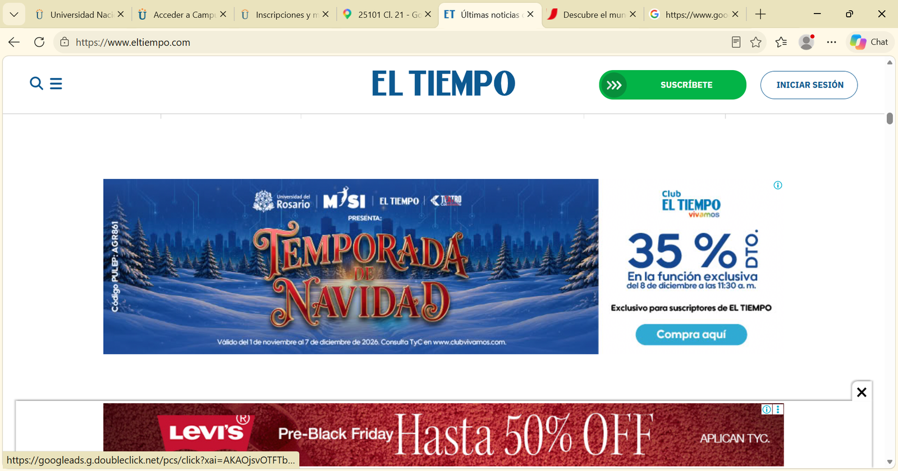
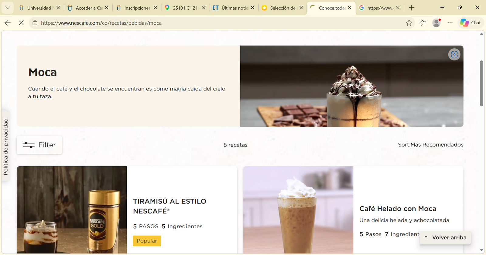
Instalar FTK Imager
- Entre a exterro.com → FTK product downloads y elija FTK Imager 8.3.x, la versión gratuita. No descargue la versión Pro ni la suite FTK.
- Llene el formulario y presione DOWNLOAD. Se descarga en su carpeta Descargas el archivo
FTK Imager 8.3.0.27.zip(387 MB). - Clic derecho sobre ese
.zip→ Extraer todo… → Extraer. Se crea una carpeta con el mismo nombre. - Dentro de esa carpeta, doble clic en
Exterro_FTK_Imager_(x64).exe, acepte el Control de cuentas y siga el asistente: Next → Next → Finish.
La opción Add Installation File path in Windows Defender Exclusion List agrega la carpeta de FTK a las exclusiones del antivirus. Si la deja marcada, documéntelo. Bonjour y el soporte de Apple no son necesarios para capturar RAM.
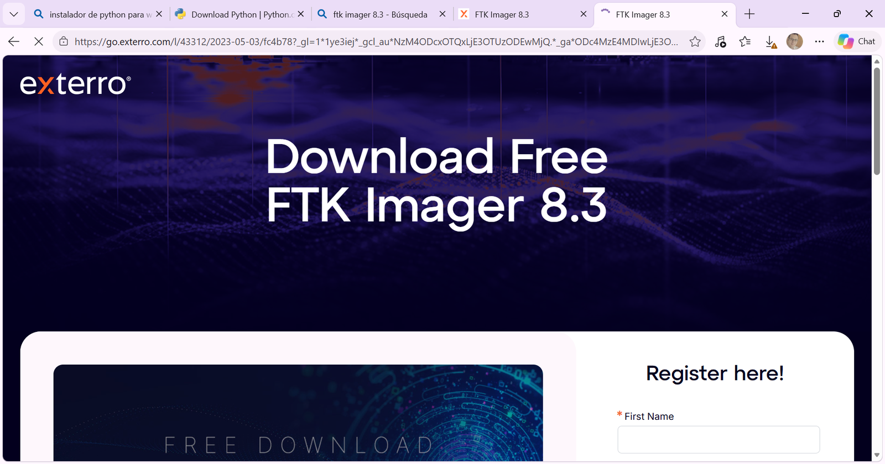
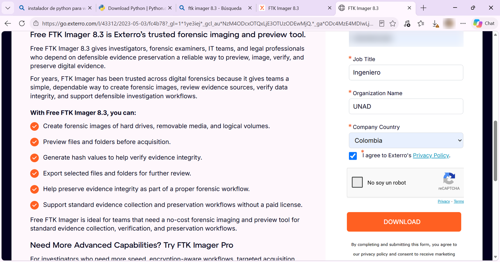
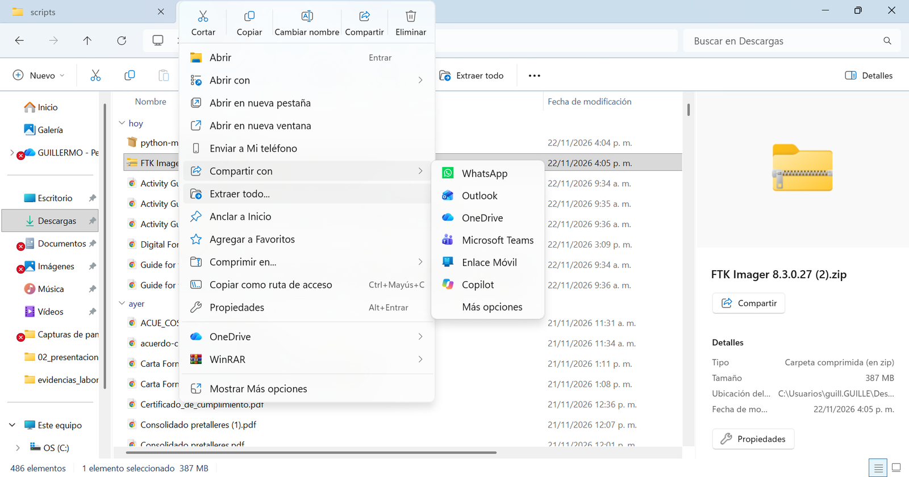
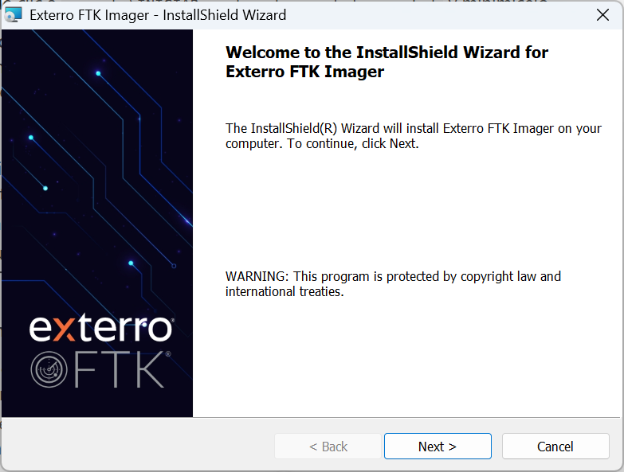
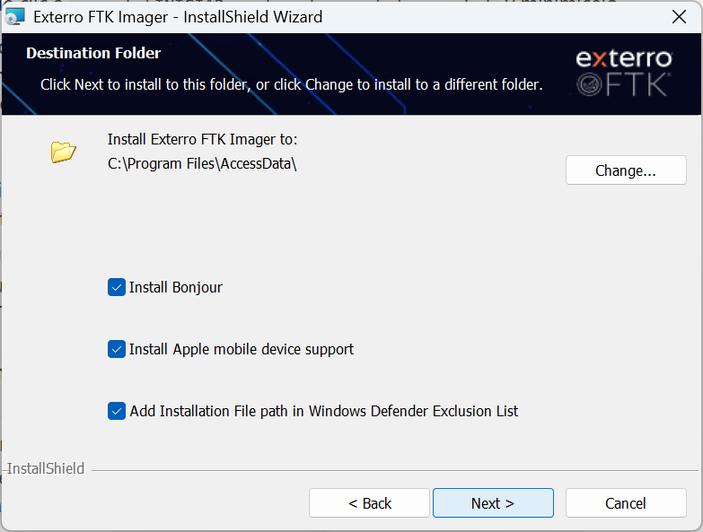
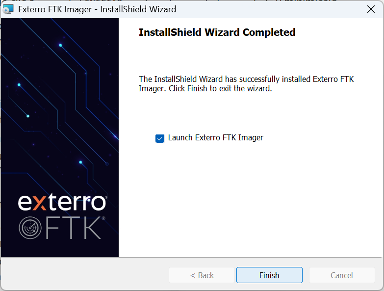
Capturar la RAM con FTK Imager
- Abra FTK Imager como administrador.
- File → Capture Memory…
- Destination path: Browse → carpeta de evidencias (fuera de OneDrive).
- Destination filename:
LAB01_FTK_GUILLE_20261122.mem - Deje sin marcar Include pagefile y Create AD1 file, para obtener un RAW puro.
- Capture Memory y espere el mensaje Memory capture finished successfully. En este equipo tardó 96 s.
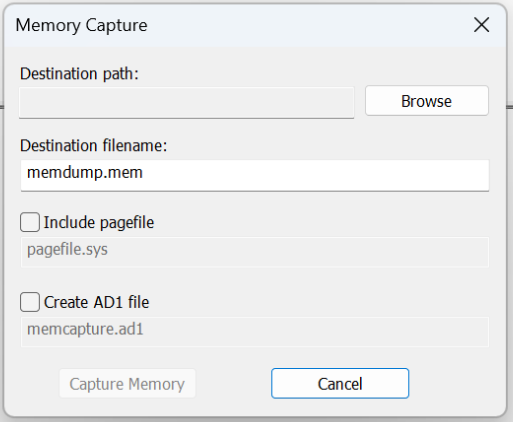
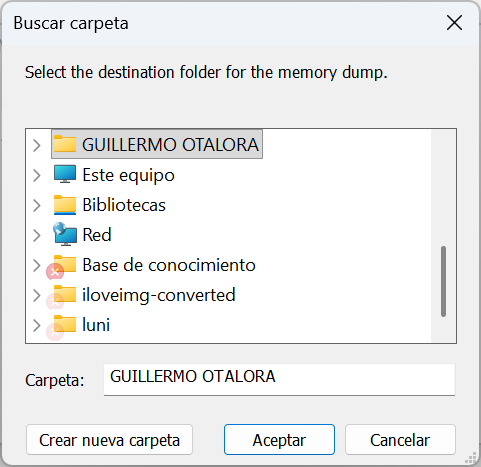
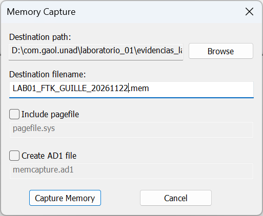
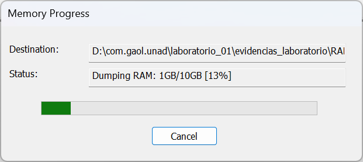
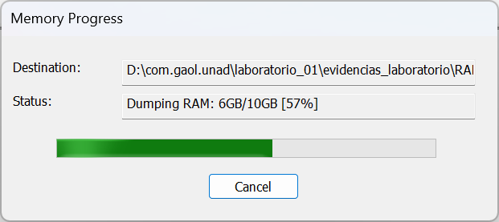
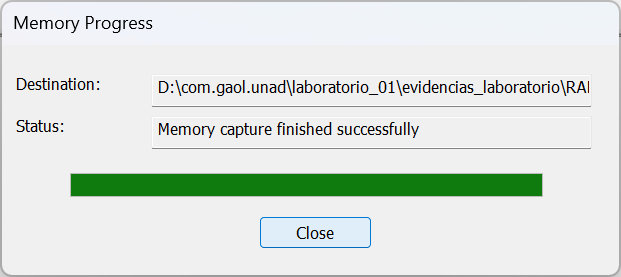
Capturar con WinPmem (línea de comandos)
WinPmem es un ejecutable portable y de código abierto: se descarga de github.com/Velocidex/WinPmem/releases y no se instala. Abra CMD como administrador, porque WinPmem carga un driver para leer la memoria física, y escriba:
cd C:\Herramientas\winpmem
certutil -hashfile winpmem_mini_x64_rc2.exe SHA256 # registrar el hash de la herramienta
winpmem_mini_x64_rc2.exe D:\Evidencias\LAB01_WinPmem_GUILLE_20261122_164926.rawWinPmem64
Extracting driver to C:\Users\GUILL~1.GUI\AppData\Local\Temp\pme751D.tmp
Loaded Driver C:\Users\GUILL~1.GUI\AppData\Local\Temp\pme751D.tmp.
The system time is: 21:49:26
Will generate a RAW image
6 memory ranges:
Start 0x00001000 - Length 0x0009E000
Start 0x00100000 - Length 0x6FA45000
Start 0x6FB46000 - Length 0x00027000
Start 0x6FB6E000 - Length 0x001E7000
Start 0x71EFF000 - Length 0x00001000
Start 0x100000000 - Length 0x180000000
max_physical_memory_ 0x280000000
Acquitision mode PTE Remapping
00% 0x00100000 ...xxxx...........................................
...
94% 0x25E000000 ..................................
The system time is: 21:51:24
Driver Unloaded.La captura tardó 118 s. Las pocas x son páginas que el hardware no dejó leer, lo cual es normal. Esta versión termina con código de salida 1 aunque la captura esté completa.
Sellar cada imagen: hashes, hora y solo lectura
Get-Date -Format "yyyy-MM-dd HH:mm:ss zzz"
Get-FileHash .\LAB01_FTK_GUILLE_20261122.mem -Algorithm MD5
Get-FileHash .\LAB01_FTK_GUILLE_20261122.mem -Algorithm SHA1
Get-Content .\LAB01_FTK_GUILLE_20261122.mem.hashes.txt # hashes registrados
Get-FileHash .\LAB01_FTK_GUILLE_20261122.mem -Algorithm SHA256
certutil -hashfile .\LAB01_FTK_GUILLE_20261122.mem SHA256 # verificación cruzada
Set-ItemProperty .\LAB01_FTK_GUILLE_20261122.mem -Name IsReadOnly -Value $true| ID | Archivo | Herramienta | Captura (UTC−5) | Duración | Bytes |
|---|---|---|---|---|---|
| EV-01 | LAB01_FTK_GUILLE_20261122.mem | FTK Imager 8.3.0.27 (File → Capture Memory) | 2026-11-22 16:45:06 → 16:46:42 | 96 s | 10.737.418.240 |
| EV-02 | LAB01_WinPmem_GUILLE_20261122_164926.raw | WinPmem 2.0.1 (winpmem_mini_x64_rc2.exe, PTE remapping) | 2026-11-22 16:49:26 → 16:51:24 | 118 s | 10.737.418.240 |
| ID | Algoritmo | Valor |
|---|---|---|
| EV-01 | MD5 | E4FFC0C59584D6FB30A537283BC4246A |
| EV-01 | SHA‑1 | F2FF287BADB7C974BFB78BCC0A3E372C21B42E6B |
| EV-01 | SHA‑256 | 0654752FC6628B0FA1333316B8531F440D7090E74337F429397A7F492D394736 |
| EV-02 | MD5 | F642D204A5A07D562E8B81A2E0070258 |
| EV-02 | SHA‑1 | A7532010B73469AB432FAE2C6A89D781963C6F1E |
| EV-02 | SHA‑256 | 2B62243A8593068052EEF3E2C42EABB6378E7E63C4866F1F27C15736C818F331 |
La RAM cambió entre las dos capturas, que se hicieron con unos 3 minutos de diferencia. En una imagen de RAM, el hash no demuestra que el archivo sea igual a la memoria: demuestra que el archivo no ha cambiado desde que se adquirió.
¿Por qué la imagen pesa 10 GiB si el equipo tiene 7,75 GB de RAM?
Las herramientas recorren el espacio de direcciones físicas, que en este equipo llega hasta 0x280000000 (10 GiB). Los huecos reservados para dispositivos (MMIO) se rellenan con ceros, para que la posición dentro del archivo coincida con la dirección física que Volatility3 necesita.
Registro de cadena de custodia
La cadena de custodia documenta quién tuvo la evidencia, cuándo, cómo y para qué, desde que se adquiere hasta que se presenta. Este registro básico sigue los campos del Manual del Sistema de Cadena de Custodia de la Fiscalía General de la Nación y la ISO/IEC 27037. Hay una versión imprimible en Descargas.
Registro de cadena de custodia · Evidencia digital volátil
Caso LAB01‑2026‑001| Campo | Información |
|---|---|
| Entidad / programa | Universidad Nacional Abierta y a Distancia (UNAD) · ECBTI · Maestría en Ciberseguridad · curso Digital Forensics 203028123 |
| Tipo de actividad | Práctica simulada de laboratorio (escenario controlado, no judicial) |
| Responsable de la recolección | Ing. Guillermo Otálora Luna |
| Equipo de origen | ASUS VivoBook X415JA · nombre GUILLE · usuario GUILLE\guill · Windows 11 Home 25H2 build 26200.9974 · RAM 7,75 GB |
| Estado del equipo al adquirir | Encendido, sesión iniciada, Microsoft Edge con 5 pestañas del laboratorio; OneDrive en pausa |
| Zona horaria y referencia | (UTC−05:00) Bogotá · hora del equipo de adquisición |
| Ubicación de almacenamiento | D:\com.gaol.unad\laboratorio_01\evidencias_laboratorio\RAM\ (NTFS, local, fuera de OneDrive) · copia de distribución en Google Drive |
Elementos de evidencia
| ID | Descripción | Herramienta y versión | Tamaño | SHA‑256 | Estado |
|---|---|---|---|---|---|
| EV-01 | Imagen RAW de memoria físicaLAB01_FTK_GUILLE_20261122.mem | FTK Imager 8.3.0.27 (File → Capture Memory) | 10.737.418.240 bytes | 0654752FC6628B0FA1333316B8531F440D7090E74337F429397A7F492D394736 | Solo lectura + .hashes.txt |
| EV-02 | Imagen RAW de memoria físicaLAB01_WinPmem_GUILLE_20261122_164926.raw | WinPmem 2.0.1 (winpmem_mini_x64_rc2.exe, PTE remapping) | 10.737.418.240 bytes | 2B62243A8593068052EEF3E2C42EABB6378E7E63C4866F1F27C15736C818F331 | Solo lectura + .hashes.txt |
Registro de eventos
| Fecha y hora (UTC−5) | Acción | Responsable | Verificación |
|---|---|---|---|
| 2026‑11‑22 16:45:06 → 16:46:42 | Adquisición EV‑01 con FTK Imager (File → Capture Memory) | G. Otálora | Mensaje «finished successfully» |
| 2026‑11‑22 16:49:24 | Hashes MD5/SHA‑1/SHA‑256 de EV‑01; archivo en solo lectura | G. Otálora | certutil SHA‑256 coincide |
| 2026‑11‑22 16:49:26 → 16:51:24 | Adquisición EV‑02 con WinPmem 2.0.1 | G. Otálora | Log completo del driver |
| 2026‑11‑22 16:53:04 | Hashes de EV‑02; archivo en solo lectura | G. Otálora | certutil SHA‑256 coincide |
| 2026‑11‑22 17:00 y 17:57 | Verificación del SHA‑256 de EV‑01 antes de cada análisis | G. Otálora | Hash idéntico al registrado |
| 2026‑11‑22 17:01 → 17:59 | Análisis con Volatility3 2.28.2 (solo lectura sobre EV‑01; windows.info sobre EV‑02) | G. Otálora | Resultados CSV con hash |
| 2026‑11‑22 (noche) | Copia de EV‑01 y EV‑02 con sus .hashes.txt a Google Drive, carpeta Artefacto_RAW, para distribución académica con acceso restringido | G. Otálora | Cada receptor verifica el SHA‑256 tras descargar |
Comparativa: FTK Imager vs WinPmem
Las dos herramientas produjeron imágenes del mismo tamaño, igual de válidas para Volatility3. Se diferencian en la forma de trabajo y en la huella que dejan en el equipo.
| Criterio | FTK Imager 8.3.0.27 | WinPmem 2.0.1 |
|---|---|---|
| Interfaz | Gráfica (ventanas y menús) | Línea de comandos |
| Licencia | Gratuita, propietaria (Exterro), con registro | Código abierto (Apache 2.0), Velocidex |
| Instalación | Instalador de 387 MB (zip); agrega carpeta a exclusiones de Defender | Ejecutable portable de 527.640 bytes; no se instala |
| Formato de salida | RAW .mem (opcional: pagefile y contenedor AD1) | RAW .raw (versiones nuevas: también AFF4) |
| Tiempo de captura medido | 96 s | 118 s |
| Tamaño de la imagen | 10.737.418.240 bytes | 10.737.418.240 bytes |
| Hash integrado para RAM | No (se calcula aparte) | No (se calcula aparte) |
| Automatización / remoto | Limitada | Total: scripts, respuesta a incidentes, ejecución remota |
| Huella en el sistema | Programa instalado y 2 procesos durante la captura | Menor: driver temporal en %TEMP%, borrado al terminar |
| Facilidad para principiantes | Alta | Media (requiere consola de administrador) |
| Compatibilidad con Volatility3 | Sí | Sí |
| Mejor uso | Laboratorios, enseñanza, peritos que prefieren interfaz gráfica | Respuesta a incidentes, USB forense, muchas máquinas |
Ventajas de FTK Imager
- Muy intuitivo; ideal para empezar.
- Ampliamente aceptado en ámbitos judiciales.
- La misma herramienta sirve para imágenes de disco (Laboratorio 03).
- Puede incluir el pagefile en la misma operación.
Ventajas de WinPmem
- Pequeño, portable y gratuito.
- Se automatiza y deja registro de cada rango copiado.
- Menor huella: no se instala.
- Ideal para ejecutarlo desde una USB forense.
Para la docencia, use FTK Imager para entender el proceso y WinPmem para practicar la adquisición documentada por consola. En un caso real, prefiera una herramienta portable ejecutada desde un medio externo, y registre siempre versión, hash de la herramienta y hora.
Glosario
61 términos agrupados por tema. Haga clic en una tarjeta (o enfóquela y presione Enter) para ver la definición al reverso.
Evidencia y normas 8 términos
Adquisición 10 términos
Integridad 9 términos
Memoria y Windows 10 términos
Volatility3 11 términos
Red 7 términos
Informe forense 6 términos
Descargas
Imagen RAW (10 GiB)
En la carpeta Artefacto_RAW de Google Drive, sin comprimir: LAB01_FTK_GUILLE_20261122.mem (la que se analiza) y LAB01_WinPmem_GUILLE_20261122_164926.raw (opcional), cada una con su .hashes.txt. Descargue archivo por archivo, no la carpeta completa.
Abrir Artefacto_RAW en Google Drive
Acceso restringido a la comunidad académica. Verifique el SHA‑256 después de descargar (Parte 1, paso 1.3).
Verificación rápida
sha256sum -c SHA256SUMS-LAB01.txt # Linux / CAINE
Get-FileHash .\LAB01_FTK_GUILLE_20261122.mem -Algorithm SHA256 # Windows| Archivo | Contenido |
|---|---|
| Plantilla-Informe-Forense-LAB01.docx | Plantilla del informe con secciones guiadas y rúbrica |
| buscar_urls.py | Herramienta del curso para buscar URLs en el RAW (guárdela como buscar_urls.py) |
| SHA256SUMS-LAB01.txt · .mem.hashes.txt | Hashes de la imagen |
| Cadena-de-Custodia-LAB01-2026-001.pdf | Registro de cadena de custodia imprimible |
| Tutorial-Lab01-Estudiante.pdf · .docx | Este tutorial en PDF y en Word |
Referencias
- Brezinski, D. y Killalea, T. (2002). RFC 3227: Guidelines for Evidence Collection and Archiving. IETF. rfc-editor.org/rfc/rfc3227
- ISO/IEC 27037:2012. Guidelines for identification, collection, acquisition and preservation of digital evidence.
- Kent, K., Chevalier, S., Grance, T. y Dang, H. (2006). NIST SP 800‑86: Guide to Integrating Forensic Techniques into Incident Response. nist.gov
- ENFSI (2015). Best Practice Manual for the Forensic Examination of Digital Technology.
- Fiscalía General de la Nación (2018). Manual del Sistema de Cadena de Custodia.
- Ostrovskaya, S. y Skulkin, O. (2022). Practical Memory Forensics. Packt Publishing (bibliografía del syllabus, resultados de aprendizaje 1 y 3).
- Volatility Foundation. Volatility 3. github.com/volatilityfoundation/volatility3
- Velocidex. WinPmem. github.com/Velocidex/WinPmem
- Exterro. FTK Imager. exterro.com/ftk-product-downloads
- UNAD (2026). Syllabus del curso Digital Forensics 203028123 y Guía del componente práctico, Reto 3.